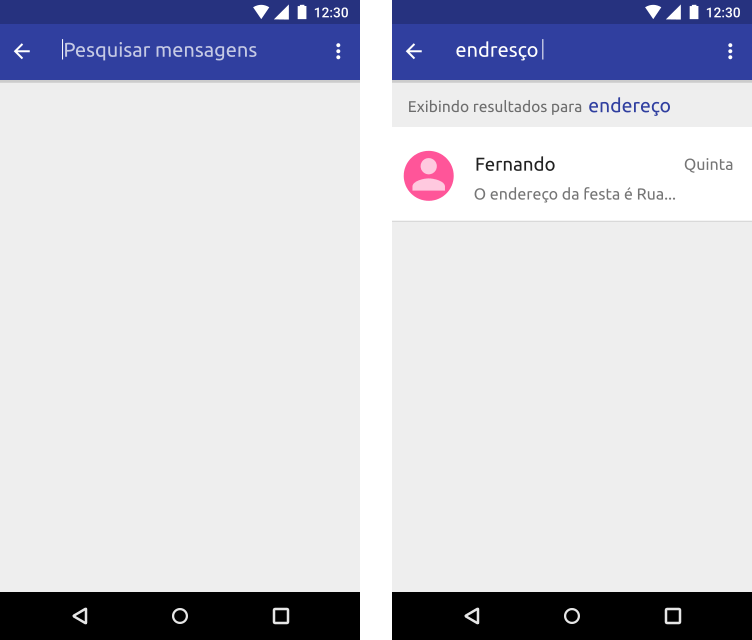

Visibilidade e status do sistema
Navegação
A navegação através do seu aplicativo deve ser intuitiva e previsível de forma que os seus usuários saibam onde estão e o que eles podem fazer. Para isso forneça um caminho claro, que seja lógico e fácil de seguir.
Nem todas as ações têm a mesma importância. Decida o que é mais importante em seu aplicativo e torne fácil de encontrar e rápido de usar. Crie layouts claros destacando as ações e informações principais de cada tela.
O botão de pausa e as informações da música que está tocando são destacados.
Organize sua estrutura de informações de modo que o acesso ao conteúdo seja fácil, rápido e requeira um número mínimo de toques, interações e de telas. Sempre que possível, ofereça uma maneira simples e visível de navegar ou executar uma ação, mesmo que isso signifique um ou dois toques extras.
Minimize as etapas necessárias para executar uma tarefa. Estar focado em uma tarefa garante que as interfaces sejam menos confusas e simples até o ponto de ter apenas os elementos necessários absolutos na tela para completar essa tarefa. Isso também permite que a interface seja visível aos usuários que são interrompidos com freqüência.
Simplifique a interface do seu aplicativo com:
- Elementos visualmente claros
- Contrastes e tamanhos suficientes
- Uma hierarquia clara de importância
- Destacando as informações e ações principais
- Focando em uma tarefa de cada vez
Gestos
Use gestos de toque para criar fluidez na navegação. Por exemplo, você pode deixar as pessoas deslizarem do lado da tela para mudar de abas ou para abrir/fechar uma parte visual de sua tela.
O menu lateral pode ser fechado utilizando o gesto de deslizar.
É possível alternar as abas de navegação utilizando o gesto de deslizar.
Feedback
O feedback ajuda os usuários a compreender os resultados das suas ações e a saber o que o aplicativo está fazendo. Forneça feedback em resposta a cada ação do usuário e sobre qualquer tarefa em andamento.
Idealmente, os usuários devem obter informações importantes sem ter de agir ou ser interrompidos. Sempre que possível forneça feedback de forma não intrusiva, como um breve destaque em elementos interativos quando tocados ou uma notificação na barra de status.
Um ícone na barra de status informa quando um download está em andamento e quando ele foi concluido.
O feedback háptico consiste numa pequena vibração que permite ao usuário saber quando atingiu um determinado estado ou valor. Use-o quando o feedback visual possa estar ocluído e, de maneira geral, em resposta a ações iniciadas pelo usuário.
O gesto "long press" em um card.
Não confie em um único modo de comunicação. As pessoas podem desativar o recurso inteiramente nas configurações do aparelho se assim desejarem.
Reconhecimento
Quando um usuário invoca uma ação em seu aplicativo, reconheça essa ação através de um texto ou uma mudança visual. Como um ícone que muda conforme o estado ou uma rápida mensagem apresentada na tela.
O ícone do coração mostra um efeito enquanto está sendo tocado e muda sua cor quando muda de estado.
Reconhecer ações ajuda a remover a incerteza sobre coisas que aconteceram ou acontecerão, principalmente sobre as operações implícitas que o sistema está executando.
Um feedback em forma de texto informa que uma mensagem está sendo enviada.
Para ações que são reconhecidas através de meios visuais, como uma lista reorganizando-se quando um item é excluído, nenhum feedback extra é necessário.
Animação & transição
Use efeitos de animação e transição para comunicar o que está acontecendo, para chamar atenção a um elemento e para manter o senso de continuidade e fluidez da interação do usuário com seu aplicativo.
Esses efeitos ajudam a aumentar a compreensão e o prazer do usuário, e , quando usados adequadamente, eles podem:
- Transmitir status
- Fornecer feedback sutil
- Melhorar a sensação de manipulação direta
- Ajudar o usuário a visualizar os resultados de suas ações
Lembre-se: Use efeitos de animação e transição de forma criteriosa, com propósito. O movimento deve ser significativo, apropriado e rápido. A interação não deve manter o usuário esperando mais do que o necessário.
Ao tocar em um card da lista, o card é expandido e são mostradas mais informações sobre o card tocado.
Carregamento
Quando o conteúdo está sendo carregado, uma tela em branco ou estática pode fazer parecer que seu aplicativo está congelado, resultando em confusão, frustração e potencialmente fazendo com que as pessoas saiam do seu aplicativo. Deixe claro quando um carregamento está ocorrendo.
No mínimo, mostre um indicador de progresso para denotar que algo está acontecendo. Se possível, mostre o progresso para que o usuários possam avaliar quanto tempo eles devem aguardar para conclusão.
Um indicador de progresso padrão informa que há um processo em execução.
Personalize as telas de carregamento. Embora os indicadores de progresso padrão geralmente sejam suficientes, às vezes eles podem parecer fora de contexto. Considere projetar uma experiência mais imersiva através de animações personalizadas e elementos que combinem com o estilo do seu aplicativo.
Uma animação de uma taça de vinho mantem a identidade do aplicativo ao mesmo tempo que informa a existência de um processo em execução.
Sempre que possível dê liberdade ao usuário de fazer outras tarefas simultaneamente à tarefa que está sendo processada. Quando isso não for possível aproveite para educar ou entreter os usuários como estratégia para mascarar o tempo de carregamento. Considere mostrar sugestões sobre jogabilidade, seqüências de vídeo divertidas ou imagens interessantes no lugar do espaço reservado para o conteúdo.
Dicas sobre o jogo são apresentadas enquanto uma fase do jogo está sendo carregada.
Mostre o conteúdo o mais rápido possível. Não faça as pessoas aguardarem que o conteúdo seja carregado antes de ver a tela que eles esperavam. Mostre a tela imediatamente e use texto, gráficos ou animações para identificar onde o conteúdo ainda não está disponível.
Exiba os elementos estruturais principais, como a barra de status, a barra do aplicativo e a página sem conteúdo até que o aplicativo tenha sido carregado. A medida que o conteúdo for sendo carregado substitua os espaços reservados pelos elementos.
A estrutura da tela é apresentada até que o seu conteúdo termine de carregar.
Prefira as atualizações locais na tela no lugar das globais, uma vez que as atualizações locais mantêm o contexto da interação. Sempre que possível carregue previamente o próximo conteúdo em segundo plano, como, enquanto uma animação está sendo reproduzida ou o usuário está navegando em outro nível do aplicativo
Estado vazio
Os estados vazios ocorrem quando o conteúdo de um elemento não pode ser exibido. Uma lista que não contenha itens ou uma pesquisa que não exiba resultados são exemplos de estados vazios. Embora esses estados não sejam típicos, assim como acontece com o carregamento, eles devem ser projetados para evitar a confusão do usuário.
Conteúdos possíveis para estados vazios:
- Slogan de texto
- Imagem não interativa
Uma imagem não interativa e um texto informam que a lista está vazia.
Existem várias situações em que você pode fornecer aos usuários alternativas para estados verdadeiramente vazios, são algumas delas:
Conteúdo inicial
- Use conteúdo que tenha um amplo apelo e demonstre recursos principais.
- Dê aos usuários a capacidade de excluir e substituir esse conteúdo.
Um applicativo de receitas mostra sugestões de sobremesas de possível interesse do usuário.
Conteúdo educacional
- Ajude os usuários a entender o que eles poderão fazer nesta tela, uma vez que ele tenha conteúdo.
- Permite descartar ou ignorar este conteúdo.
- Mantenha-o breve
 Um card explica o que o usuário pode fazer no aplicativo e o direciona para adicionar seu primeiro conteúdo.
Um card explica o que o usuário pode fazer no aplicativo e o direciona para adicionar seu primeiro conteúdo.
Melhor correspondência
- Se nada coincide exatamente com a consulta do usuário, existem resultados para uma consulta soletrada ligeiramente diferente? Em caso afirmativo, mostre os resultados, pois eles podem ajudar um usuário a encontrar o que ele está procurando.

Um aplicativo de mensagens exibe resultados possíveis para uma busca cuja consulta foi digitada incorretamente.